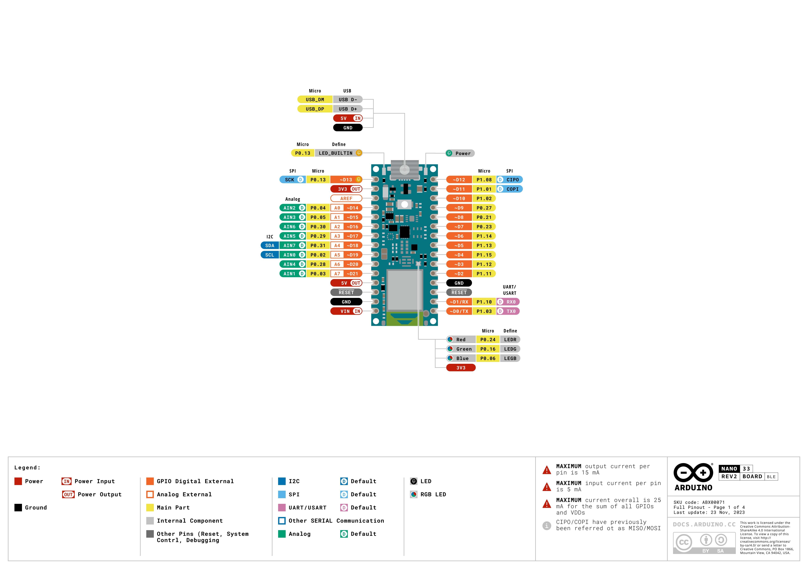

Arduino Nano 33 BLE Sense
The Arduino Nano 33 BLE Sense is a 45 × 18 mm Arduino‑Nano‑form‑factor sensor board built around the Nordic Semiconductor nRF52840 — a single ARM Cortex‑M4 with FPU running at 64 MHz with 256 KB of internal SRAM and 1 MB of internal flash. Bluetooth LE 5.0 (and 802.15.4) come from the SoftDevice running on the same SoC, and the board carries an integrated environmental and motion sensor cluster: 9‑axis IMU, barometer, temperature / humidity, ambient light / colour / proximity / gesture, and a PDM microphone.
The Nano 33 BLE Sense has no on‑board image sensor — the OpenMV firmware here is a sensors‑and‑audio build focused on the integrated peripherals plus support for external thermal cameras over I²C.

For full datasheet, photos, and dimensions see the Arduino Nano 33 BLE Rev2 product page.
Highlights
Nordic nRF52840 Cortex‑M4 at 64 MHz with 256 KB internal SRAM and 1 MB internal flash (Softdevice s140 + OpenMV firmware + filesystem all share this 1 MB).
Bluetooth LE 5.0 plus IEEE 802.15.4 (Thread / Zigbee) via the on‑die radio and Nordic SoftDevice s140.
9‑axis IMU — accelerometer + gyroscope + magnetometer. Rev 1 boards have an STMicro LSM9DS1; Rev 2 boards have a Bosch BMI270 plus a BMM150 magnetometer. The frozen
imumodule probes both at boot.Pressure sensor — STMicro LPS22HB barometer (260–1260 hPa).
Temperature / humidity — HTS221 on Rev 1, HS3003 on Rev 2.
Light / colour / proximity / gesture — Broadcom APDS9960.
MEMS microphone — STMicro MP34DT05, captured through audio — Audio Module.
20 user I/O pins on the standard Nano headers — D2–D13 (digital) plus A0–A7 (analog). Twelve PWM outputs.
Micro USB connector for power, programming, and a CDC REPL.
Note
The OpenMV firmware on the Nano 33 BLE Sense is a stripped‑down
build compared with the OpenMV camera boards: there is no
on‑board image sensor, no JPEG codec, no GPU, no Wi‑Fi, no
networking stack, and no ML / TFLite inference. Bluetooth LE is
available through the legacy ubluepy module (the
modern bluetooth / aioble — Async BLE APIs are not
enabled). Use the integrated sensors together with
ulab.numpy for on‑device DSP and feature extraction.
Pinout
{kind=link}

Pin reference
Pin name |
Reference |
Function |
|---|---|---|
RX (D0) |
3.3 V |
UART1 RX (Serial1) / P1.10 |
TX (D1) |
3.3 V |
UART1 TX (Serial1) / P1.03 |
D2 |
3.3 V |
P1.11 |
D3 |
3.3 V |
P1.12 (PWM‑capable) |
D4 |
3.3 V |
P1.15 (PWM‑capable) |
D5 |
3.3 V |
P1.13 (PWM‑capable) |
D6 |
3.3 V |
P1.14 (PWM‑capable) |
D7 |
3.3 V |
P0.23 (PWM‑capable) |
D8 |
3.3 V |
P0.21 (PWM‑capable) |
D9 |
3.3 V |
P0.27 (PWM‑capable) |
D10 |
3.3 V |
P1.02 (PWM‑capable) |
D11 |
3.3 V |
P1.01 / SPI0 COPI (PWM‑capable) |
D12 |
3.3 V |
P1.08 / SPI0 CIPO |
D13 |
3.3 V |
P0.13 / SPI0 SCK / LED_BUILTIN |
A0 |
3.3 V |
P0.04 / ADC IN2 |
A1 |
3.3 V |
P0.05 / ADC IN3 |
A2 |
3.3 V |
P0.30 / ADC IN6 |
A3 |
3.3 V |
P0.29 / ADC IN5 |
A4 |
3.3 V |
P0.31 / ADC IN7 / I2C0 SDA |
A5 |
3.3 V |
P0.02 / ADC IN0 / I2C0 SCL |
A6 |
3.3 V |
P0.28 / ADC IN4 |
A7 |
3.3 V |
P0.03 / ADC IN1 |
RESET |
3.3 V |
press the on‑board RESET button or pull to GND to reset |
LED_BUILTIN |
3.3 V |
Yellow LED on D13 (P0.13) |
LED_RED |
3.3 V |
RGB LED red channel (active low) / P0.24 |
LED_GREEN |
3.3 V |
RGB LED green channel (active low) / P0.16 |
LED_BLUE |
3.3 V |
RGB LED blue channel (active low) / P0.06 |
LED_PWR |
3.3 V |
Green power LED / P1.09 |
Warning
The Nano 33 BLE Sense’s I/O pins are 3.3 V only — they are not 5 V tolerant. Driving 5 V into them will damage the nRF52840.
Power pins
VIN — 4.5 – 21 V input. Powers the board through the on‑board regulator.
+5V — switched 5 V from USB / VIN, available to power external shields. Disabled by default; cut the small
VUSBjumper on the back to enable it.+3V3 — 3.3 V regulator output (~50 mA available for shields).
AREF — analog reference input.
GND — common ground.
The Nano 33 BLE Sense can be powered through either path:
Micro USB — supplies 5 V to the on‑board regulator.
VIN pin — drive a regulated 4.5 – 21 V supply.
Recovery and debug pins
RESET — both an exposed pad and a momentary RESET button on the top of the board, tied to the nRF52840’s reset line.
The Nano 33 BLE Sense uses Arduino’s standard double‑tap reset
to enter the on‑board mass‑storage bootloader. Quickly press the
reset button twice — the board re‑enumerates over USB as a drive
that accepts a .bin firmware image, and OpenMV IDE uses this
mode to flash.
A running script can re‑enter the bootloader on demand by calling
machine.bootloader():
import machine
machine.bootloader()
The nRF52840’s SWD signals are exposed on small pads on the back of
the board (SWDIO, SWCLK, GND). They are 3.3 V referenced.
Onboard peripherals
LEDs
The Nano 33 BLE Sense has three indicator paths. The nrf port
exposes them through a board‑specific LED class addressed by
numeric ID:
LED id |
Channel |
|---|---|
|
Red (P0.24, active low) |
|
Green (P0.16, active low) |
|
Blue (P0.06, active low) |
|
Yellow |
from board import LED
LED(4).on() # yellow user LED
LED(1).on() # red
The green power LED on P1.09 is wired in hardware to the
3.3 V rail and is not addressable through LED — drive it
directly via machine.Pin (alias "LED_PWR") if you want
to use it as an extra status indicator.
IMU
The 9‑axis IMU is exposed through the frozen imu module, which
auto‑detects whether the board has the original LSM9DS1 (Rev 1) or
the BMI270 + BMM150 (Rev 2) and presents a unified IMU class.
Pass it the internal I²C bus the sensors share (bus 1 on
P0.14/P0.15):
import imu
import time
from machine import I2C, Pin
bus = I2C(1, scl=Pin(15), sda=Pin(14))
sensor = imu.IMU(bus)
while True:
print(sensor.accel()) # (x, y, z) acceleration tuple
print(sensor.gyro()) # (x, y, z) angular‑rate tuple
print(sensor.magnet()) # (x, y, z) magnetometer tuple
time.sleep_ms(100)
For direct access to a specific driver — useful when you need the
IMU’s tap detection, FIFO, or lower‑level configuration — import
the matching frozen driver (lsm9ds1, bmi270,
bmm150) and instantiate it on the same internal I²C bus.
Environmental sensors
The pressure, temperature, and humidity sensors live on the same
internal I²C bus as the IMU (bus 1, on P0.14/P0.15). The nrf
port’s machine.I2C doesn’t auto‑bind to those pins, so pass
them explicitly:
import time
from machine import I2C, Pin
from lps22h import LPS22H
from hts221 import HTS221 # Rev 1 (try first)
# from hs3003 import HS3003 # Rev 2
bus = I2C(1, scl=Pin(15), sda=Pin(14))
lps = LPS22H(bus)
try:
hts = HTS221(bus)
except OSError:
from hs3003 import HS3003
hts = HS3003(bus)
while True:
print("pressure: %.2f hPa" % lps.pressure())
print("temperature: %.2f C" % lps.temperature())
print("humidity: %.2f %%" % hts.humidity())
time.sleep_ms(500)
Light / colour / proximity / gesture
The Broadcom APDS9960 supports ambient light, RGB colour,
proximity, and gesture sensing on the same I²C bus. The frozen
apds9960 package wraps it:
from time import sleep_ms
from machine import I2C, Pin
from apds9960 import uAPDS9960 as APDS9960
bus = I2C(1, scl=Pin(15), sda=Pin(14))
apds = APDS9960(bus)
apds.enableLightSensor()
while True:
sleep_ms(250)
print("ambient light:", apds.readAmbientLight())
Microphone
The on‑board MP34DT05 PDM microphone is captured through audio — Audio Module:
import audio
from ulab import numpy as np
def loudness(pcmbuf):
samples = np.array(np.frombuffer(pcmbuf, dtype=np.int16), dtype=np.float)
rms = np.sqrt(np.mean(samples ** 2))
if rms > 10000:
print("Loud!", int(rms))
audio.init(channels=1, frequency=16000, gain_db=24)
audio.start_streaming(loudness)
Bluetooth LE
The nRF52840’s Bluetooth LE radio (running on the Nordic SoftDevice
s140) is exposed through the legacy ubluepy module. Advertise as
a peripheral with a single Service / Characteristic:
from ubluepy import Service, Characteristic, UUID, Peripheral, constants
from board import LED
def event_handler(id, handle, data):
if id == constants.EVT_GAP_CONNECTED:
LED(2).on() # green LED on connect
elif id == constants.EVT_GAP_DISCONNECTED:
LED(2).off()
periph.advertise(device_name="Nano 33", services=[svc])
svc = Service(UUID("181A")) # Environmental Sensing
svc.addCharacteristic(Characteristic(UUID("2A6E"), props=0x12)) # read + notify
periph = Peripheral()
periph.addService(svc)
periph.setConnectionHandler(event_handler)
periph.advertise(device_name="Nano 33", services=[svc])
The aioble — Async BLE and bluetooth modules used by the
OpenMV camera boards are not enabled in this firmware build.
External thermal cameras
The Nano 33 BLE Sense build wires fir — thermal sensor driver (fir == far infrared) to the
internal I²C 0 bus on A4/A5. Plug an MLX90621, MLX90640,
MLX90641, or AMG8833 thermal sensor onto those pins and read frames
with:
import fir
fir.init(fir.FIR_MLX90640)
while True:
ta, ir, fmin, fmax = fir.read_ir()
print("scene min/max:", fmin, "/", fmax)
Bus reference
GPIO
Use machine.Pin to read or drive any of the silkscreened pins. Outputs are 3.3 V CMOS. Maximum 15 mA per pin; maximum 25 mA total across all GPIOs.
from machine import Pin
out = Pin("D2", Pin.OUT)
out.on()
out.off()
out.value(1)
inp = Pin("D3", Pin.IN, Pin.PULL_UP)
print(inp.value())
UART
Bus |
TX |
RX |
|---|---|---|
UART1 |
TX |
RX |
The TX and RX pads on the silkscreen are also labelled
D1 and D0 respectively. Inside MicroPython use the names
TX/RX (the names D0/D1 are not exported):
from machine import UART
uart = UART(1, baudrate=115200)
uart.write("hello")
uart.read(5)
I²C
Bus |
SCL |
SDA |
|---|---|---|
I2C0 |
A5 |
A4 (header pins) |
I2C1 |
— |
— (internal — IMU, baro, env, APDS9960) |
from machine import I2C
i2c = I2C(0, freq=400_000)
i2c.scan()
i2c.writeto(0x76, b"hi")
Bus 1 is the internal sensor bus — it serves the IMU, barometer,
environmental sensor, and APDS9960. machine.I2C(1) is what the
frozen sensor drivers use; you can scan or talk to it from your own
code, but be aware the addresses are already taken by the on‑board
sensors.
SPI
Bus |
MOSI |
MISO |
SCK |
CS |
|---|---|---|---|---|
SPI0 |
D11 |
D12 |
D13 |
— |
Note
The SCK line shares D13 with the yellow LED_BUILTIN —
running SPI will blink the LED in time with the bus clock.
The CS line is not driven by the SPI peripheral — configure any free GPIO as an output and toggle it manually around the transfer:
from machine import SPI
from machine import Pin
spi = SPI(0, baudrate=10_000_000)
cs = Pin("D9", Pin.OUT, value=1) # CS is not driven by the SPI peripheral
cs.value(0)
spi.write(b"hello")
cs.value(1)
ADC
The nRF52840 has eight 12‑bit ADC channels (SAADC) exposed on
A0–A7. read_u16 returns 0–65535 across 0–3.3 V at the pin:
from machine import ADC
import time
adc = ADC("A0")
while True:
voltage = adc.read_u16() * 3.3 / 65535
print(voltage)
time.sleep_ms(100)
PWM
The nRF52840’s PWM peripheral can drive most user GPIOs. Drive any of the digital pins via machine.PWM:
from machine import Pin, PWM
pwm = PWM(Pin("D3"), freq=1_000, duty_u16=32768)
Software bit‑banged buses
machine.SoftI2C and machine.SoftSPI work on any GPIO if you need an extra bus.
Timing
time
The time module covers blocking delays, monotonic ticks, and
elapsed‑time measurement:
import time
time.sleep(1) # seconds
time.sleep_ms(500)
time.sleep_us(10)
start = time.ticks_ms()
# ...do work...
elapsed = time.ticks_diff(time.ticks_ms(), start)
Real‑time clock
machine.RTC keeps wall‑clock time across resets. The nRF52840’s RTC is tied to the on‑chip oscillator and does not survive full power loss — set the time on every cold boot if it matters to your application:
from machine import RTC
rtc = RTC()
rtc.datetime((2026, 4, 30, 4, 12, 0, 0, 0)) # Y, M, D, weekday, h, m, s, subsec
print(rtc.datetime())
Boot and runtime info
Firmware update (DFU)
The Nano 33 BLE Sense uses Arduino’s standard double‑tap reset
to enter the on‑board mass‑storage bootloader (a single contiguous
128 KB at the top of flash, baked into the board at the factory).
Quickly press the reset button twice — the board re‑enumerates over
USB as a small drive named ARDUINO and OpenMV IDE flashes the
firmware over that.
Filesystem and boot order
The Nano 33 BLE Sense firmware mounts a single filesystem on boot:
Internal flash — 64 KB partition mounted at
/flashand used as the working directory. Holdsmain.pyandREADME.txtby default; created on the very first boot.
After mounting, the interpreter then runs scripts from /flash:
boot.pyis executed on every soft reset.main.pyis executed only on cold boot, immediately afterboot.py.
The default main.py shipped on a freshly flashed board just
blinks the yellow LED_BUILTIN as a heartbeat (two short pulses,
short gap), so you can tell the firmware booted cleanly without any
host attached.
When connected over USB, /flash enumerates as a USB mass‑storage
drive on the host, letting you edit boot.py, main.py, and any
other files directly. Eject the drive before resetting the board
so the host flushes its cached writes.
Software libraries
See the library index for the full list of modules — including which ones are unique to the Nano 33 BLE Sense build.